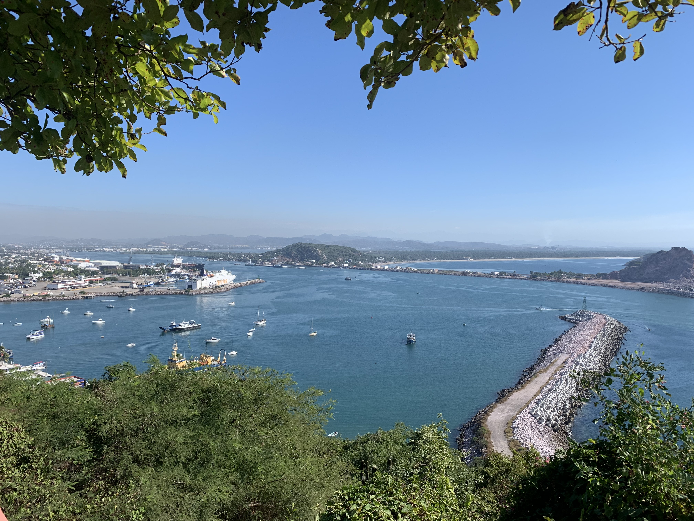
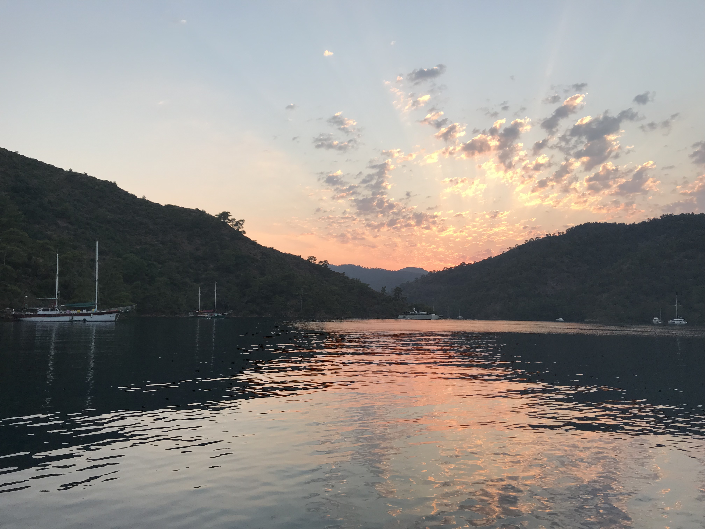

<!DOCTYPE html>

<html lang="en">

<head>
    <meta charset="UTF-8">
    <meta http-equiv="X-UA-Compatible" content="IE=edge">
    <meta name="viewport" content="width=device-width, initial-scale=1.0">
    <title>The World Through Your Eyes|Home</title>
    <link rel="stylesheet" href="./styles/home.css">
    
</head>

<body>
    <div id="content">
    <header>
        <a id="logo_link" href="./phome.html"></a>
</html>
        

        <nav>
            <a href="phome.html">Home</a>
            <a href="rivers.html">Memories</a>
            <a href="site-plan.html">Site Plan</a>
            <a href="gallery.html">Gallery</a>
        </nav>
    </header>
    
    <h1 id="memories_title">Memories</h1>
    
            <div id="memories-main">
                <div id="mexico-view">
                    
                </div>
                <div id="text_Mexico">
                    <h3>Mexico</h3>
                    <p>My family has been to Mexico countless amounts of times. Typically we stick to our usual routine of going to the beach and eating tacos. However, on this particular occasion, we decided to branch out and go on what we thought would be a pleasant, easy breezy hike. </p>  
                </div>
                <div id="trevi-view">
                    
                </div>
                <div id="text_trevi">
                    <h3>Altar of the Fatherland</h3>
                    <p>Anyone who has traveled internationally, laughs at the idea of getting any sleep on the plane. Nonetheless, we fought our jetlag and went to see the Altar of the Fatherland. Ater climbing the many stairs, looking at the gorgeous landscape and busy streets was a sureal moment for someone who has been dying to go to Italy their whole life.   </p>  
                </div>
                <div id="turkey-view">
                    
                </div>
                <div id="text_turkey">
                    <h3>Turkey</h3>
                    <p>One summer, I had the opportunity to travel with two cousins to visit their dad in Turkey. We did many amazing things, but my favorit part of the trip was our coastal cruise. We spent 3 nights on a private ship with a personal crew. This picture was taken at one of our resting spots as the sun was begining to go down.</p>  
                </div>
                
            </div>
            
        
        
        <section class="msg">
            <h2>Time to record your adventures!</h2>
            <p>Attach your unique stories from your travels for each country you’ve been to.</p>
            
        </section>
    
    <footer>
        <p>The World Through Your Eyes &copy; 2023-Julia Hatch</p>
        <p><a href="site-plan-rafting.html">Site Plan</a></p>
        <p><a href="contactus.html">Contact Us</a></p>
        <div class="social">
            <a href="https://facebook.com" target="_blank">
                
            </a>
            <a href="https://twitter.com" target="_blank">
                
            </a>
            <a href="https://instagram.com" target="_blank">
                
            </a>
        </div>
    </footer>
    </div>

</body>

</html>